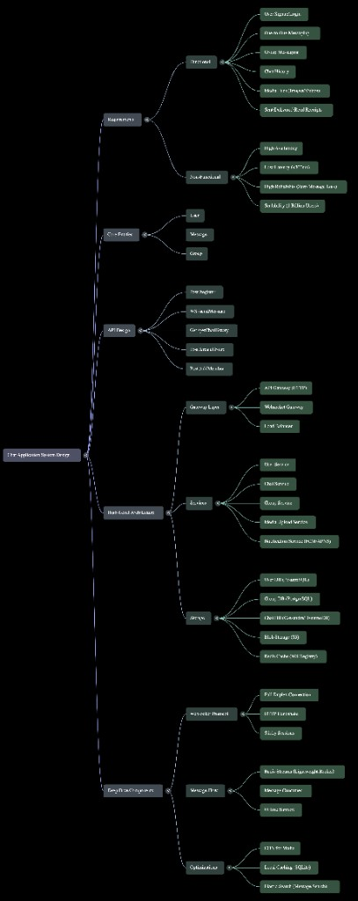

Summary
Comprehensive system design walkthrough for building a chat application similar to WhatsApp or Facebook Messenger. Supports one-to-one and group messaging, media sharing, message history, delivery/read receipts, and scalability to billions of users.
Mind Map Overview
Visual summary of the Chat Application system design:

Functional Requirements
- User Sign-up/Sign-in: Registration via phone (WhatsApp) or email (Messenger)
- One-to-One Messaging: Real-time text and media between two users
- Group Messaging: Group creation, member management, group chat
- Message History: Access past messages in chats
- Media Support: Images and videos
- Message Status: Sent, delivered, and read receipts
Non-Functional Requirements
| Requirement | Details |
|---|---|
| Scale | 1 billion users, 100 billion messages/day |
| Latency | Message delivery within 300 ms |
| Availability | High availability over strong consistency; eventual consistency acceptable |
| Reliability | Zero message loss; messages delivered or stored |
Storage: ~1 KB/message → ~1 PB/day. CAP: Prioritize Availability (A) and Partition Tolerance (P) over Consistency (C).
Core Entities
- User — Chat app user
- Group — Chat groups with multiple members
- Message — Text or media exchanged between users or groups
API Design Highlights
- User APIs: Register (POST), Sign-in (POST), Update/Delete metadata
- Messaging: One-to-one and group messaging via WebSocket (real-time duplex)
- Chat History: GET with lazy pagination
- Group Management: Create group, add/remove members (POST/DELETE)
- Receipts: Delivery/read via WebSocket events (no REST)
- Media Upload: Separate service with blob storage (S3)
High-Level System Architecture
- Clients: Mobile apps
- Load Balancer / API Gateway: HTTP for REST (sign-in, media)
- WebSocket Gateway / Load Balancer: Dedicated for chat connections
- User Service & User DB: Registration, metadata (PostgreSQL)
- Group Service & Group DB: Groups, membership (PostgreSQL)
- Chat Service & Chat DB: Text messages (Cassandra, write-optimized)
- Media Upload Service & Blob Storage: Images/videos
- Redis Cache: WebSocket connection registry (user → connection mapping)
- Message Service: Consumes event streams, persists to DB
- Event Streaming: Redis Streams (lower latency than Kafka) for delivery coordination
- Notification Service: Push for offline users (FCM, APNs)
- Message Search Service: ElasticSearch for indexing and querying
- CDN: Media content delivery
Key Design Decisions
WebSocket for Real-Time Messaging
- Full-duplex persistent connections enable near real-time bidirectional communication
- Avoids overhead of HTTP polling, long polling, or SSE
Sticky WebSocket Connections
- Each user mapped to specific WebSocket instance; mapping in Redis
- Ensures message routing to correct backend instance
Offline Users
- Messages persisted in Chat DB via Redis Streams
- Push notifications sent; on reconnect, undelivered messages fetched via WebSocket
Group Messaging
- Backend fetches member list; sends individually to each member's WebSocket or persists if offline
- Per-user delivery/read status tracking
Media Handling
Media via REST to upload service → blob storage; chat messages store URLs.
Message History & Search
- Cassandra for storage; ElasticSearch for keyword search (async indexing)
- Lazy loading for chat history
User Presence
Online status from active WebSocket entries in Redis; last seen via CDC on connection end.
Delivery/Read Receipts
WebSocket events for immediate feedback; status updated in Chat DB.
Communication Protocols
| Protocol | Description | Suitability for Chat |
|---|---|---|
| HTTP | Request-response; unidirectional | Inefficient; requires polling |
| Long Polling | Client holds request until server has data | Resource intensive, delayed |
| SSE | Unidirectional server push | Only server→client; needs extra client requests |
| WebSocket | Full-duplex, persistent | Ideal; low latency, efficient |
Data Flow Overview
| Step | Description |
|---|---|
| 1 | User registers via User Service → User DB |
| 2 | User logs in; WebSocket upgraded from HTTP handshake |
| 3 | WebSocket registered in Redis (user → connection) |
| 4 | On login, undelivered messages fetched and pushed via WebSocket |
| 5 | User sends message over WebSocket to Chat Service |
| 6 | Chat Service checks recipient connection in Redis |
| 7 | If online: message pushed directly via WebSocket |
| 8 | If offline: message to Redis Stream + notification |
| 9 | Message Service consumes stream → stores in Chat DB |
| 10 | Notification service sends push to offline recipient |
| 11 | Delivery/read receipts flow back via WebSocket |
Database Schema Examples
User Table (User DB)
user_id (PK), username, email/phone_number, status, last_seen, metadata
Group Table (Group DB)
group_id (PK), group_name, description, metadata
Group-Member Mapping
id (PK), group_id (FK), user_id (FK), join_date
Chat Message Table (Chat DB)
chat_id, message_id, sender_id, receiver_id, message, message_type, timestamp, delivery_status
Key Design Components (from Mind Map)
WebSocket Protocol
- Full-duplex connection
- HTTP handshake
- Sticky sessions
Message Flow
- Redis Streams (lightweight broker)
- Message consumer
- Offline support
Optimizations
- CDN for media
- Local caching (SQLite)
- ElasticSearch for message search
Key Insights and Conclusions
- WebSocket is essential for real-time bidirectional chat at scale
- High availability with eventual consistency is acceptable
- Redis cache for WebSocket mappings is crucial for low-latency routing
- Event streaming (Redis Streams) decouples ingestion and persistence
- Media stored separately in blob storage; chat stores URLs
- Offline handling and push notifications ensure reliability
- Group messaging as multiple individual messages for per-user status
- Lazy loading and ElasticSearch optimize retrieval and search
- User presence inferred from active WebSocket connections